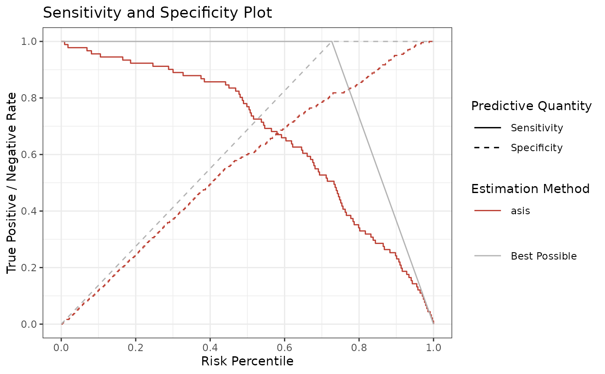
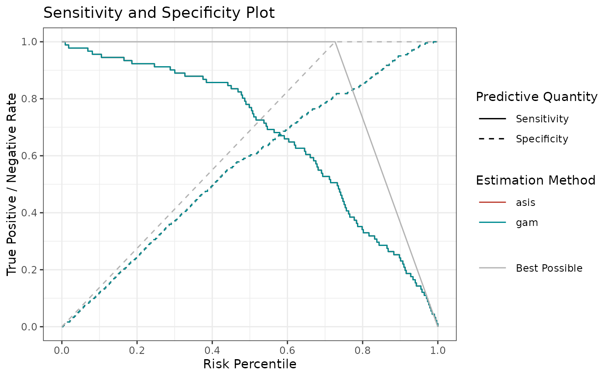

Sensitivity and specificity plot
sensSpec.RdSensitivity and specificity risk estimates
Usage
sensSpec(
outcome,
score,
methods = "asis",
show.best = TRUE,
plot.raw = FALSE,
rev.order = FALSE
)Arguments
- outcome
Vector of binary outcome for each observation.
- score
Numeric vector of continuous predicted risk score.
- methods
Character vector of method names (case-insensitive) for plotting curves or a named list where elements are method function and its arguments. Default is set to
"asis".Full options are:
c("asis", "binned", "pava", "mspline", "gam", "cgam").To specify arguments per method, use lists. For example:
list( pava = list(method = "pava", ties = "primary"), mspline = list(method = "mspline", fitonPerc = TRUE), gam = list(method = "gam", bs = "tp", logscores = FALSE), bin = list(method = "binned", bins = 10), risk = list(method = "asis") )See section "Estimation" for more details.
- show.best
Logical; Include best possible sensitivity and specificity? Defaults to
TRUE.- plot.raw
Logical to show percentiles or raw values. Defaults to
FALSE(i.e. percentiles).- rev.order
Logical, reverse ordering of scores. Defaults to
FALSE.
Details
Given individual binary outcomes and scores, this function plots sensitivity and specificity (using each score as a cutoff) on their respective score percentiles.
Estimation
The methods argument specifies the estimation method.
You can provide either a vector of strings, any of
("asis" is not available for calibrationProfile),
or a named list of lists.
In the latter case, the inner list must have an element "method",
which specifies the estimation function (one of those above),
and optionally other elements, which are passed to the estimation function.
For example:
To see what arguments are available for each estimation method,
see the documentation of that function.
The naming convention is getXest,
where X stands for the estimation method, for example getGAMest().
"gam", "cgam", and "mspline" always fit on percentiles by default.
To change this, use fitonPerc = FALSE, for example
"gam" and "cgam" methods are wrappers of mgcv::gam() and cgam::cgam(), respectively.
The default values of function arguments (like k, the number of knots in mgcv::s())
mirror the package defaults.
Examples
# Read in example data
auroc <- read.csv(system.file("extdata", "sample.csv", package = "stats4phc"))
rscore <- auroc$predicted_calibrated
truth <- as.numeric(auroc$actual)
# Plot sensitivity and specificity
p1 <- sensSpec(outcome = truth, score = rscore)
p1$plot

# Same with smoothed estimates
p2 <- sensSpec(outcome = truth, score = rscore, methods = c("asis", "gam"))
p2$plot
